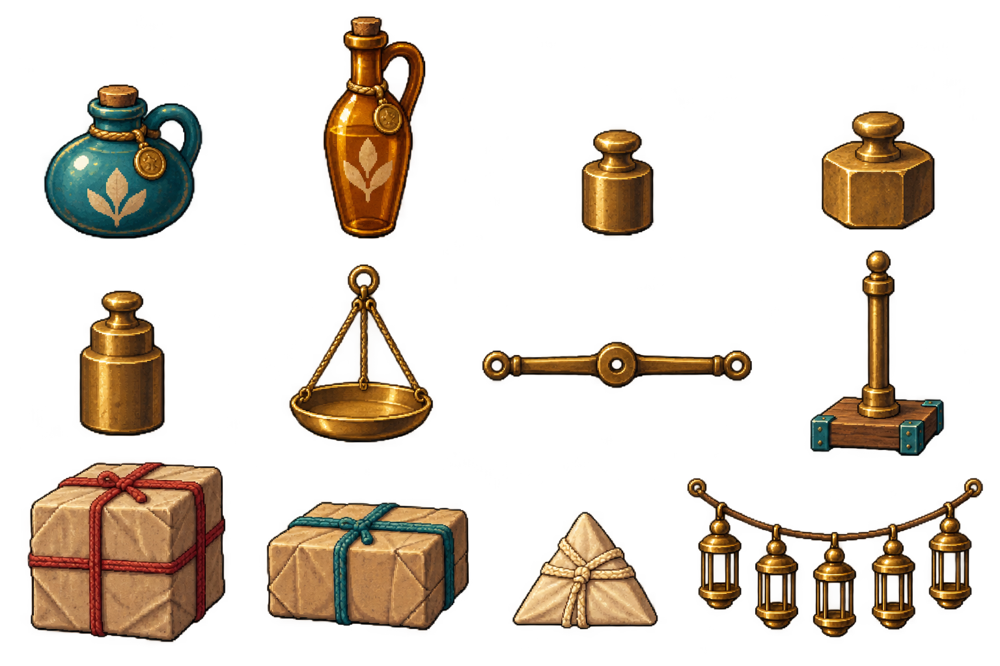

育苗铺交换台
MK02–04、MK13 · 1672×941 · RGB
中央三块木纹操作面；后方石路供人物站位；左侧夹板写引擎文字；右侧修补台。
背景含秤安装柱。接独立秤时应隐藏/去除该柱，不能叠出两座秤。
4张场景底图 + 2张透明部件母版 · 源美术交付，未接入后续关卡
MK02–04、MK13 · 1672×941 · RGB
中央三块木纹操作面；后方石路供人物站位；左侧夹板写引擎文字；右侧修补台。
背景含秤安装柱。接独立秤时应隐藏/去除该柱，不能叠出两座秤。
MK05–09、MK15 · 1672×941 · RGB
前景为采购/配货台，中景摊台对应真实接收位置，右侧货架与夹绳用于单号回执。
壁灯常亮是环境光，任务成功新增灯串必须单独绘制；五摊交互需要按视角放大，不能直接把远景当触控区。
MK11–12、MK14 · 1672×941 · RGB
前景放独立秤，三辆空车对应三个需求，拱门空牌写准确目标。
三车已在底景中，只可作为静止接收位；若要推车离场，先去烘焙再以独立车精灵接管。右侧安装柱同样需匹配秤底座。
MK10、MK16–18 · 1672×941 · RGB
左前方打包台，中间空甲板容纳独立首领，三泊位对应交货阶段，右侧独立领航灯位置。
两艘船和右侧空灯壳已在底景里；航行/灯壳移动前先拆出。甲板上的角色、首领和货物尚未接入。
MK02–09、MK13、MK15–16 · 1536×1024 · RGBA
每个物品单独建立身份与归属，原货位拿走后空出；准确数量由实例数与标签决定。
12类物件源图，不是可直接等分的精灵图集；灯芯纤维和钉子画出的根数不代表关卡数量。MK13围巾与MK16叶章仍需补。
MK11–12、MK14、MK17–18 · 1536×1024 · RGBA

梁中心为旋转枢轴；盘与绳为一件，复制左右盘后保持盘水平；砝码数字和封装量由引擎绘制。
12类部件源图，灯串作为装饰整体；若逐灯点亮需进一步拆灯壳。长秤梁和灯串跨等分网格，必须人工圈片；未做骨骼/逐帧动画。